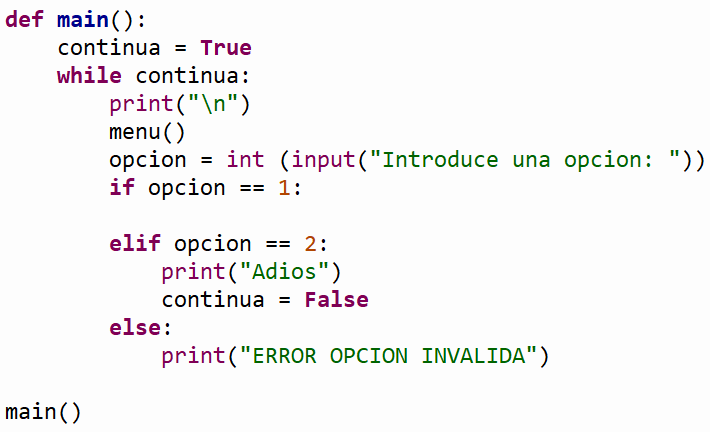

.
Objetivos:
- Aplicar el ciclo for en la
solución de problemas.
- Aplicar los conocimientos
sobre funciones.
- Utilizar funciones acompañadas
de la estructura "while".
- Utilizar funciones acompañadas
de la estructura "for".

Modalidad:

Ejercicios ciclo while:
-
La funcion
pares(a, b)
que recibe los valores a y b y muestre todos los números pares que
van desde a hasta b incluyendo
los límites.
Suponer que siempre a < b.
Para este ejercicio considera el valor 0
como par.
Ejemplo:
Si a = -3 y b = 6
La función mostrará los valores: -2 0 2
4 6
-
La
función cuentaSuma( )
que lea del teclado números enteros y los vaya contando y sumando.
La función se debe detener cuando la suma de los números leídos sea
1000 o más. Cuando la suma sea 1000 o más, el programa debe mostrar
el total de la suma y la cantidad de números que se sumaron.
Ejemplo:
Si se teclea 100 50 200 430 250
La función mostrará: suma = 1030,
cantidad de números = 5
-
La función menu
que despliegue el siguiente menú en pantalla:
1. Pares
2. Cuenta y suma
3. Salir
La función
main()
que utilice la función menu para desplegar el menú
correspondiente y de acuerdo a la opción seleccionada por el
usuario le dé la oportunidad de ejecutar cualquiera de las
funciones que han sido construidas. Utiliza el estatuto de control
if anidado.
Recuerda
que la captura de datos debe ser realizada en la sección del main.
Debes utilizar el ciclo while para que se cicle el
programa hasta que el usuario introduzca la opción de salir o una
opción inválida.
En el
script principal
manda llamar a la función main.
Guarda tu
archivo como:
While_Matricula.py

Ejercicios ciclo for:
-
La funcion
muestraNumeros(n) que reciba un número entero
positivo n y muestre una lista de números que empiezan en 1 e
incrementan de uno en uno hasta llegar a n y después decrementa de
uno en uno hasta llegar a 1: 1, 2, ... n, n-1, n-2 ... 1
Ejemplo:
Si n = 5, la función
mostraría lo siguiente: 1 2 3 4 5 4
3 2 1
-
La
funcion
numerosAleatorios()
que despliega en pantalla 40 números aleatorios entre -10 y 90.
- La función
Elefantes(n)
que recibe el numero de elefantes y despliega ese
número de líneas.
Ejemplo: Si el número de
elefantes es: 5, la función mostraría lo siguiente:
1 elefante
2 elefantes
3 elefantes
4 elefantes
5 elefantes
-
La función
menu()
que despliegue el siguiente menú en pantalla:
1. Muestra números
2. Números
aleatorios
3. Elefantes
4. Salir
-
La función
main()
que utilice la función menu para desplegar el menú
correspondiente y de acuerdo a la opción seleccionada por el
usuario le dé la oportunidad de ejecutar cualquiera de las
funciones que han sido construidas. Utiliza el estatuto de control
if anidado.
Recuerda que la
captura de datos debe ser realizada en la sección del main. Debes
utilizar el ciclo while para que se cicle el
programa hasta que el usuario introduzca la opción de salir.
-
En el
script principal
manda llamar a la función main.
Guarda tu archivo como:
For_Matricula.py


Recursos:
6. Funciones
7. While
8. For

Especificaciones
de entrega:
|